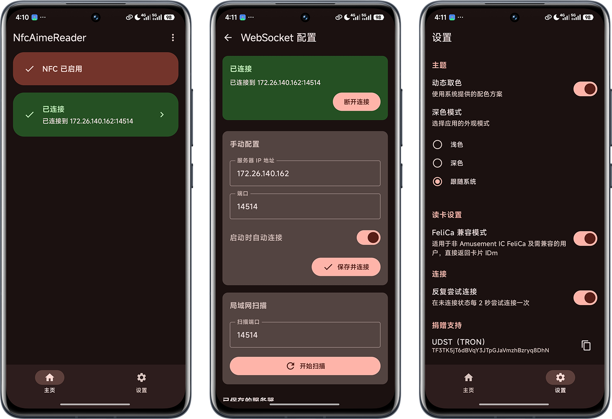

LATEST
待机
SEASON 01 / EVENT UPDATES
Welcome to
CHUNITHM!
启动游戏、浏览活动资讯，并快速完成本地配置。
目标模式
1920×1080 @ 120Hz
原始分辨率
未读取
主显示器
未选择
下载Android Aime NFC 读卡器

01
安装应用
下载并安装 NFC Aime Reader。
02
打开 NFC
将手机靠近 Aime 卡片完成读取。
03
连接游戏
按照项目说明配置本地读卡器。
首次配置
先完成游戏路径、主显示器和界面主题配置。
启动与显示器
设置
选择后即刻生效启动与分辨率
外观
活动来源
活动服务不可用时会使用本地缓存或内置活动。
ALL.Net提供商
关于
项目主页
版本更新
支持项目
支持项目
感谢你的支持，捐赠完全自愿如果这个启动器帮到了你，可以通过 USDT（TRON）支持后续维护。
USDT（TRON）
TF3TK5jT6dBVqY3JTpGJaVmzhBzryq8DhN
项目公告